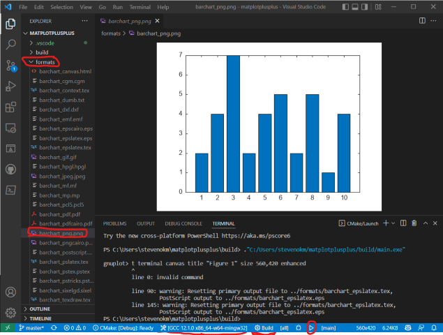

(Extra) C++ Image Export & Matplot++
Slides version: lecture16_slides.html Website version: lecture16.html
- Tutorail: Matplot++
- Installation
- Hello world
- Plot Functions
- Annotations
- Appearance
- Export to image
- Example: Plot a Geometry on Complex Plane
- Pratices
Installation
Windows + MinGW: Update gcc
Note: 須先完成 設定 VSCode 環境 (Windows + MinGW) 再進行下一步
Terminal:
# remove old gcc 8.1.0
scoop uninstall mingw
# install new gcc 12.1.0
scoop install mingw-winlibs
Linux/macOS: Install CMake
Terminal:
Linux
sudo apt install cmake
macOS
brew install cmake
Install gnuplot
Terminal:
Windows
scoop install gnuplot
Linux
sudo apt install gnuplot
macOS
brew install gnuplot
Note: 安裝完成後須重新啟動 VSCode 及重新打開 Terminal 才能生效
Update VSCode C/C++ Extension
Install C/C++ Extension Pack
Correct:

Install Matplot++
Download project file & open in VSCode:
- github link stevenokm/matplotplusplus-master.zip
- 解壓縮全部，解壓縮後會有一個
matplotplusplus-master目錄 - 使用 VSCode 打開
matplotplusplus-master目錄
Build Matplot++ & Test Matplot++
- configure project "matplotplusplus-master" (Yes)

- select right active kit
- Windows:
GCC 12.1.0 x86_64-w64-mingw32 - Linux:
GCC 9.4.0 x86_64-linux-gnu(Ubuntu 20.04) - macOS:
Clang 13.0.0 arm64-apple-darwin20.6.0(macOS Big Sur, Apple Silicon)
- Windows:

- Press "Build" button on the bottom of the VSCode window

- Press "Run" button on the bottom of the VSCode window

- Press "Debug" button on the bottom of the VSCode window to debug
Note 要注意 CMake 的設定是在 Debug CMake: [Debug] 下執行的
Hello world
Ref: Bar Plot - Matplot++
#include <cmath>
#include <matplot/matplot.h>
int main()
{
using namespace matplot;
std::vector<double> y = {75, 91, 105, 123.5, 131, 150,
179, 203, 226, 249, 281.5};
bar(y);
show();
return 0;
}
Result:

Plot Functions
- Line Plot
- Histogram
- Scatter Plot
- Bar Plot
- Pareto Chat
- Polar Line Plot
Line Plot
#include <cmath>
#include <matplot/matplot.h>
int main()
{
using namespace matplot;
std::vector<int> y = {2, 4, 7, 7, 6, 3, 9, 7, 3, 5};
plot(y);
show();
return 0;
}
Result:
Histogram
#include <cmath>
#include <matplot/matplot.h>
#include <random>
int main()
{
using namespace matplot;
std::vector<double> x = randn(10000, 0, 1);
auto h = hist(x);
std::cout << "Histogram with " << h->num_bins() << " bins" << std::endl;
show();
return 0;
}
Result:
Scatter Plot
#include <matplot/matplot.h>
#include <random>
int main()
{
using namespace matplot;
auto x = linspace(0, 3 * pi, 200);
auto y = transform(x, [&](double x)
{ return cos(x) + rand(0, 1); });
scatter(x, y);
show();
return 0;
}
Result:

Bar Plot
Ref: Bar Plot - Matplot++
#include <cmath>
#include <matplot/matplot.h>
#include <random>
int main()
{
using namespace matplot;
std::vector<std::vector<double>> Y = {
{2, 2, 2, 2}, {2, 5, 8, 11}, {3, 6, 9, 12}};
bar(Y);
show();
return 0;
}
Result:
Pareto Chat
#include <cmath>
#include <matplot/matplot.h>
#include <random>
int main()
{
using namespace matplot;
std::vector<double> codelines = {200, 120, 555, 608, 1024, 101, 57, 687};
std::vector<std::string> coders = {"Fred", "Ginger", "Norman", "Max",
"Julia", "Wally", "Heidi", "Pat"};
pareto(codelines, coders);
title("Lines of Code by Programmer");
show();
return 0;
}
Result:

Polar Line Plot
Ref: Polar Line Plot - Matplot++
#include <cmath>
#include <matplot/matplot.h>
int main()
{
using namespace matplot;
std::vector<double> theta_degrees = linspace(0, 360, 50);
std::vector<double> rho =
transform(theta_degrees, [](auto t)
{ return 0.005 * t / 10.; });
std::vector<double> theta_radians = deg2rad(theta_degrees);
polarplot(theta_radians, rho);
show();
return 0;
}
Result:

Annotations
- Text
- Text with Arrow
- Rectangle
- Textbox
Text
Ref: Text - Matplot++
#include <cmath>
#include <matplot/matplot.h>
int main()
{
using namespace matplot;
std::vector<double> x = linspace(-5, +5);
std::vector<double> y =
transform(x, [](auto x)
{ return pow(x, 3) - 12 * x; });
plot(x, y);
std::vector<double> xt = {-2, +2};
std::vector<double> yt = {16, -16};
std::string str = "dy/dx = 0";
text(xt, yt, str);
show();
return 0;
}
Result:

Text with Arrow
Ref: Text with Arrow - Matplot++
#include <cmath>
#include <matplot/matplot.h>
int main()
{
using namespace matplot;
plot(iota(1, 10));
auto [t, a] = textarrow(2.5, 6.5, 5, 5, "y=x");
t->color("red").font_size(14);
a->color("blue");
show();
return 0;
}
Result:
Rectangle
#include <cmath>
#include <matplot/matplot.h>
int main()
{
using namespace matplot;
rectangle(2, 4, 2, 2, 1.);
auto r2 = rectangle(2, 4, 2, 2, 0.);
r2->color("red");
axis(equal);
show();
return 0;
}
Result:

Textbox
Ref: Textbox - Matplot++
#include <cmath>
#include <matplot/matplot.h>
int main()
{
using namespace matplot;
plot(iota(1, 10));
textbox(2, 8, 4, 0.5, "String line from 1 to 10");
show();
return 0;
}
Result:

Export to image
- Manually
- Programmatically
Manually
- Click on the
Export to imagebutton

- Type filename
ProgProgrammatically
Export files with save()
#include <cmath>
#include <matplot/matplot.h>
int main()
{
using namespace matplot;
plot(iota(1, 10));
textbox(2, 8, 4, 0.5, "String line from 1 to 10");
// show();
// windows gnuplot bug workaround
save("../textbox_export.png");
// export to file with fileextension .png
save("../textbox_export.png");
// or with filename and filetype
save("../textbox_export", "svg");
return 0;
}
Result: textbox_export.png
Result: textbox_export.svg

Example: Plot a Geometry on Complex Plane [Source]
Pratices
- Draw & Save
Triangle_2Din 2D plane by matplot++ - Draw & Save
Triangle_Compin Polar Complex plane by matplot++